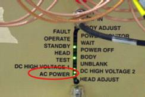
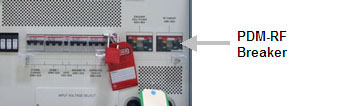
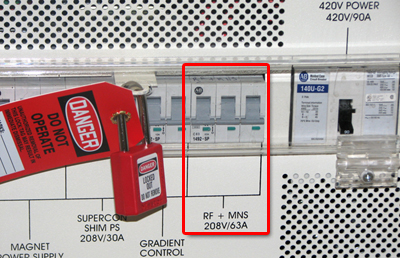
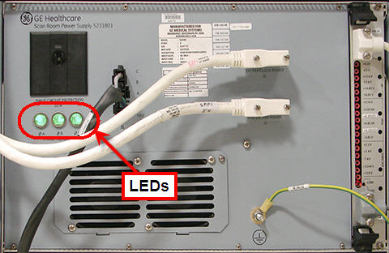
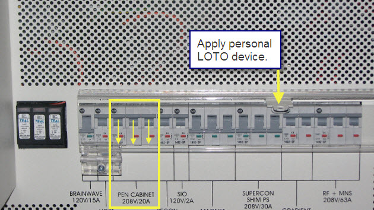
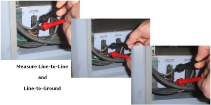

Operating Documentation
Direction 5500113, Rev# 3
Discovery MR750 3.0T Service Methods
Module Version 9.0, Version Date 8/26/10
Operating Documentation |
| Required Persons | Preliminary Reqs | Procedure | Finalization |
|---|---|---|---|
| 1 | Not Applicable | 30 mins |
Prior to performing service or maintenance work on the RF (Radio Frequency) Subsystem electronics, Penetration (PEN) Cabinet Panel electronics (such as Patient Handling Power Supply), or Magnet Room electronics (such as the Scan Room Interface (SRI) and Patient Blower), a LOTO-authorized GE Field Engineer (FE) must perform the steps in this Lock Out / Tag Out (LOTO) procedure. Completing all steps in this procedure ensures a safe environment when working on these parts.
| NOTE: | Observe the following:
|
Table 1: Affected by LOTO
| Name of Equipment | Number of Locks | Titles of Employees Authorized to perform LOTO | Titles of Affected Employees | How to Notify |
|---|---|---|---|---|
Examples of RF Subsystem components
Examples of Pen Cabinet Electronics
Examples of Magnet Room Electronics
| 1 per GE Field Engineer (FE) | GE Field Engineers | Hospital Personnel | Verbal, Posted signs |
| NOTE: | The following table describes the type, location, and magnitude of energy to be LOTO’d. |
| Energy Source | Yes | No | Location of Energy Isolating Means | Magnitude of Energy |
| Electrical | x | Power, Gradient, RF Cabinet (PGR) PDU (power distribution unit) Circuit Breaker Panel | 208 VAC | |
| Pneumatic | x | |||
| Hydraulic | x | |||
| Gas/Water/Steam | x | |||
| Chemical | x | |||
| Mechanical Motion | x | |||
| Gravity | x | |||
| Springs | x | |||
| Thermal | x | |||
| Stored Energy | x | Time discharge of internal capacitors | 170 VDC | |
| Air Under Pressure | x | |||
| Oil Under Pressure | x | |||
| Water Under Pressure | x | Heat Exchanger Cabinet (HEC) PGR Pump Circuit Breaker (PPMPCB) and RF amp quick disconnect | 5.0 Bar (80 psi) | |
| Gas Under Pressure | x | |||
| Steam | x | |||
| Other | x |
| Item | Qty | Effectivity | Part# | Manufacturer | |
|---|---|---|---|---|---|
| Brass Master Lock Personal Lock | 1 | - | 46-194427P320 | - | |
| Red LOTO Personal Lock Wrap | 1 | - | 2393068 | - | |
| Multi-locking Device (If multiple service people are involved) | 1 | - | 46-194427P313 | - | |
| Red Warning LOTO Tag | 1 | - | 46-194427P322 | - | |
| Multimeter for reading voltage | 1 | - | 46-194427P284 | - | |
| ||||
| ELECTROCUTION HAZARD! | ||||
| HIGH VOLTAGE PRESENT. | ||||
| USE PROPER LOCK OUT / TAG OUT PROCEDURES BEFORE servicing and/or maintaining. |
| Condition | Reference | Effectivity |
|---|---|---|
Prior to powering-down the entire RF and PEN cabinet, power-off the Host. You can power-down the RF Amplifier and PEN Cabinet when the power LED on the host computer is no longer lit. | - | - |
Time method for dissipation of stored energy – 5 minutes.
Visual inspection of Patient Handling Power Supply (PHPS) power switch.
Multimeter set to read voltage for verification of RF portion of PGR cabinet and PEN cabinet.
Personal lock and tag for each FE at the site working on the de-energized equipment.
Prepare for shutdown of equipment. Notify affected personnel working in the area that LOTO is being performed.
At the Operator Workspace, Shut down the Host PC.
Visually confirm that power is on. Look at the RF Amplifier LEDs to visually confirm that the AC POWER is on (see illustration below).
Illustration 1: RF Amplifier LEDs

At the front panel of the PDU, switch the PDM-RF (or RF+MNS) circuit breaker to the OFF (DOWN) position. (Shown below.)
Illustration 2: Old Style RF Amp Circuit Breaker

Illustration 3: New Style RF Amp Circuit Breaker

At the front panel of the PDU covering the circuit breakers, apply a personal LOTO device for each FE working on the equipment. (Shown above.)
Confirm that the power is OFF. Look at the RF Amplifier LEDs to see that all LEDs are dark to visually confirm that the power is OFF (see Illustration 1).
| NOTE: | It may take several minutes for lights to completely turn off. |
If the LEDs are on, confirm that the RF Subsystem/PEN Cabinet circuit breaker is in the OFF position.
For old-style cabinets, verify that all energy has been dissipated. Measure the voltage at the power distribution module terminal board and confirm 0 volts. (See illustration below.)
Illustration 4: PGR Power Distribution Module Terminal Board (If Present)

If the PDM is not present measure voltage across the terminal block where the RF Amp receives power.
Place a test lead at the ground terminal. (See illustration below, the ground is labeled #6).
Test for voltage across all the other connected terminals. (See illustration below, terminals 1, 2, 3, and 4.)
| NOTE: | In some configurations the RF Amp may need to be removed to access the terminal block. |
Illustration 5: Terminal Block

Prepare for shutdown of equipment. Notify affected personnel working in the area that LOTO is being performed.
At the Operator Workspace, Shut down the Host PC.
Visually confirm that power is on. Look at the SRPS or PHPS LEDs to visually confirm that the power is on (see illustration below).
Illustration 6: PEN Cabinet LEDs On (SRPS)

At the front panel of the PDU, switch the PDM-RF (or PEN Cabinet) circuit breaker to the OFF (DOWN) position. (Shown below.)
Illustration 7: Old Style PEN Cabinet Circuit Breaker
Illustration 8: New Style PEN Cabinet Circuit Breaker

At the front panel of the PDU covering the circuit breakers, apply a personal LOTO device for each FE working on the equipment. (Shown above.)
Confirm that the power is OFF. Look at the SRPS or PHPS LEDs to visually confirm that the power is OFF (see Illustration 6).
If the LEDs are on, confirm that the RF Subsystem/PEN Cabinet circuit breaker is in the OFF position.
Verify that all energy has been dissipated. Measure the voltage at the Power Distribution Module incoming AC connector and confirm 0 volts. (See illustration below.)
| NOTE: | The PHPS power switch LED is off when the voltage is dissipated. |
Illustration 9: PGR Power Distribution Module terminal Board (If Present)

Prepare for reenergizing the equipment. Notify affected personnel working in the area that LOTO is being removed.
Remove the personal LOTO device(s) from the front panel of the PDU.
At the front panel of the PDU flip the RF Subsystem/PEN Cabinet circuit breaker switches to the ON position.
| NOTE: | You may need to perform an EMO Reset if the RF Amp LEDs do not come on. |
Turn on the host computer.
Use sdc login to access host computer.